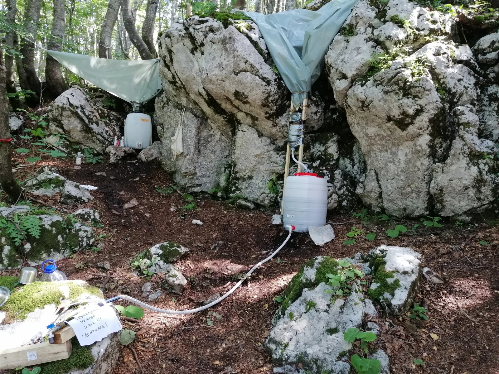

Speleološka ekspedicija "Sjeverni Velebit 2023."
U periodu 29.7. do 13.8.2023. održali smo speleološku ekspediciju ''Sjeverni Velebit 2023'' na području Rožanskih kukova u NP Sjeverni Velebit, pod vodstvom naših dama Maje Marinić i Gorane Perić.

Napisala: Maja Marinić
Fotografije: Dalibor Paar, Maja Marinić, Gorana Perić, Luka Bogdanić, Nini Legović, Krunoslav Runtas, Valentina Plemenčić
Nakon zasluženog odmora, malo kupanja i prikupljanja dojmova, možemo sa sigurnošću reći da je ovogodišnja ekspedicija bila izuzetno uspješna!
U periodu 29.7. do 13.8.2023. održali smo speleološku ekspediciju ''Sjeverni Velebit 2023'' na području Rožanskih kukova u NP Sjeverni Velebit, pod vodstvom naših dama Maje Marinić i Gorane Perić. Kao što neki već znaju, nakon nekoliko godina odlučili smo se na ekspediciji napraviti tzv. ''istureni'' logor, odnosno logor koji je udaljen od civilizacije, struje, vode i automobila oko 1,5 h hoda (u našem slučaju). To je predstavljalo veliki logistički izazov, pošto smo na logor morali fizički donijeti svu hranu, opremu, i sve potrepštine za 2 tjedna boravka na najdražem nam Velebitu. Kao i obično, ekipa je bila fantastična i sve se odradilo bez po' muke! No moramo naglasiti da smo prije ekspedicije održali i dvije predakcije na kojima smo uopće odabrali lokaciju kampa i postavili sustave s filterima za prikupljanje kišnice. To nam je jako olakšalo čitav boravak na ekspediciji jer nismo morali donositi vodu!
Istraživalo se u 56 speleoloških objekata od čega ih je 27 topografski snimljeno. Ukupna duljina istraženih i snimljenih objekata iznosi 1212 m, a dubina 816 m. Također su novopronađena 32 objekta, od kojih ih je istraženo 16, tako da sa sigurnošću imamo što raditi i sljedećih godina J
Osim novih objekata, obišli smo i nekoliko dobropoznatih i dragih nam objekata s ledom (Xantipa, Varnjača i dr.) kako bi izvršili monitoring. Zapaženo je topljenje leda u razinama od 1 m do 3,5 m.
Na ekspediciji je sudjelovalo 42 speleologa iz 8 speleoloških udruga iz Hrvatske i Austrije, te jedan speleološki suradnik iz SAD-a:
SO PDS VELEBIT: Gorana Perić, Maja Marinić, Barbara Domitrović, Luka Ivančić, Dalibor Paar, Krunoslav Runtas, Olga Jerković Perić, Dora Troha, Valentina Plemenčić, Nikola Prpić, Marko Ličko, Igor Dodolović, Katarina Azinović, Edo Vričić, Matija Čepelak Malenica, Čedo Josipović, Jakov Kožić, Roko Željem, Bruna Bušić, Barbara Trojko, Karla Tolić, Borna Boban, Teo Toplak, Danilo Dobrić, Ana Ercegovac, Lukas Grbac Lacković, Mislav Sajko, Darko Jeras
SO LIBURNIJA PD PAKLENICA: Luka Bogdanić, Ivana Lemezina, Lucija Lemezina, Luka Žarković, Mia Mandarić
SU KRAŠEVSKI ZVIRI: Jurica Jagetić
SO PD ŽELJEZNIČAR GOSPIĆ: Đenis Barnjak
V. F. HÖHLENFORSCHUNG HÖHLENBÄREN (Austrija): Paul Karoshi
SD PROTEUS: Nini Legović
SO HPD KOZJAK: Sanda Doljanin
SO HPD IMBER: Nikolina Marić, Zdravka Dedić, Dario Mrkonjić, Marko Batovanja
SAD: Samuel Marquardt
Još jednom se želimo zahvaliti svim sudionicima ekspedicije i nadamo se da se vidimo i narednih godina!
Također veliko hvala našim sponzorima koji već godinama podržavaju naš rad i uvelike nam olakšavaju organizaciju, logistiku i ostvarenje naših špiljarskih snova!
Hvala BOSCH HRv na bušilicama kojima radimo sigurnija sidrišta za spuštanje u duboke jame Velebita.
Hvala ANNAPURNA na najfinijim veganskim delicijama koje se savršeno uklapaju u naša logorska jela i specijalitete.
Hvala BAREDINE, MOON CODE, ASINCIN, Komisiji za speleololgiju HPS-a i Nacionalnom Parku Sjeverni Velebit na sredstvima koja nam omogućavaju realizaciju i čitavu logističku pripremu tijekom čitave godine
Hvala BIM SPORT na opremi koja nam je neizostavna u našim istraživanjima.
sjv 23 nini legović sjv23 nini legović 2